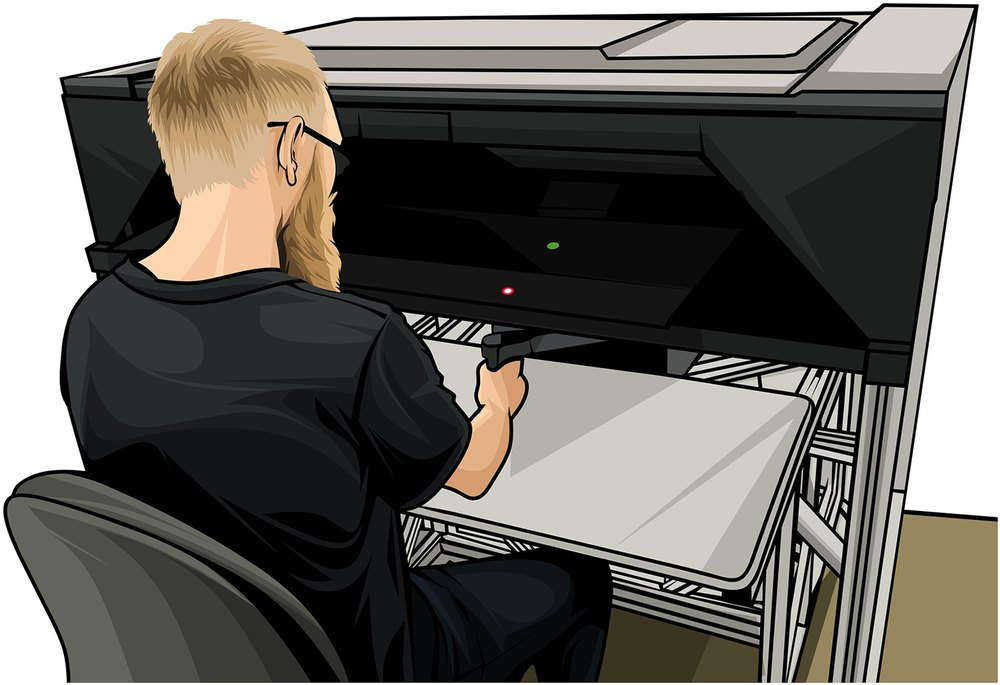
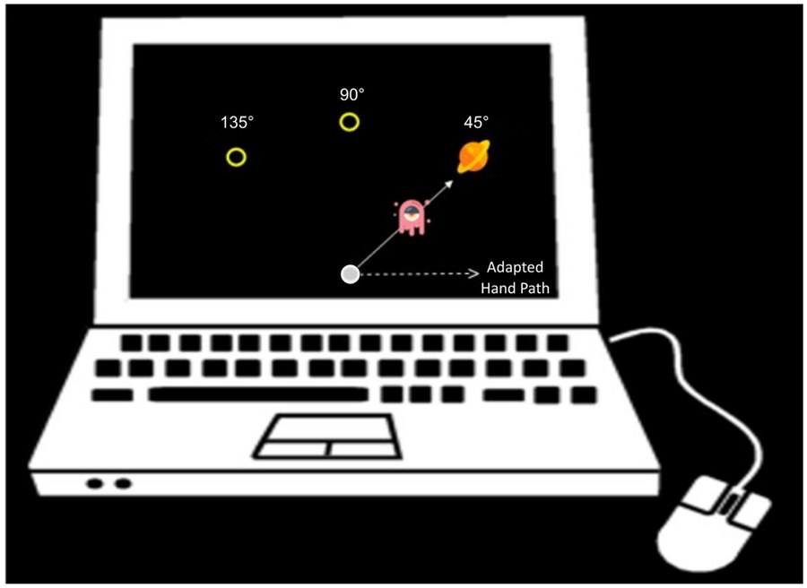

Human reaching experiments, in one format
About OpenMotor
Every experiment has been converted, trial by trial, into the same table: one row per trial, the same 90 columns, the same units and the same sign conventions. Each conversion was checked against results reported in its paper.


What's in OpenMotor
A broad, standardized collection of human sensorimotor adaptation experiments.
Manipulations
| Manipulation | What changes | Experiments |
|---|
Studies
| Lab | Manipulation | License | Download |
|---|
People counts the participants in the OpenMotor file. It can be higher than the number a paper analysed, because participants the authors excluded are kept and marked.
Trials counts rows: every trial performed, including practice and no-feedback trials, plus marked rows where the original trial numbering has gaps.
License is the license the authors gave their data. Hover over it for details.
Data Format
Every OpenMotor dataset is one table with one row per trial of one participant. All datasets share the same 90 columns, so code written for one study runs on every other. The columns are described below and in columns.csv, which comes with every download.
Conventions
Angles
Degrees in the frame of the screen: 0° points right and angles increase counter-clockwise. Hand and cursor angles are measured from the target, so 0 means straight at it. A rotation of +30° puts the cursor 30° counter-clockwise of the hand, and people who adapt to it move their hand clockwise, toward negative angles.
Columns
The 90 columns are grouped by their function in the experiment.
| Column | Type | Values or units | Description |
|---|
Example
Download
Each dataset is one ZIP file with the trial table as CSV, a README with the citation, lab and license, and columns.csv, the guide to the 90 columns.
Whole collection
catalog.csv lists every study with its paper, lab, counts and license. columns.csv is the column guide on its own.
Are you an author of one of these studies? To correct, relicense or remove your dataset, open an issue on GitHub.
Licenses
Each file keeps the license its authors chose. The README in every ZIP states it.
| License | Datasets |
|---|
All datasets
| Dataset | Participants | Trials | License | File |
|---|
How to Cite
A paper describing OpenMotor is in preparation. Until it is published, please cite OpenMotor and the original paper for every dataset you use. Each dataset's README gives its citation.
References
The papers for all 97 studies, sorted by first author.